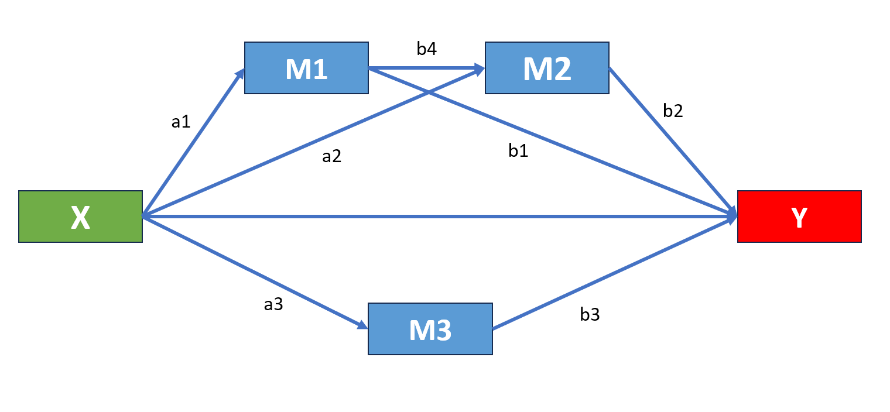

set.seed(22335) #
X <- rnorm(250)
M1 <- 0.60*X + rnorm(250)
M2 <- 0.35*X + rnorm(250)
M3 <- 0.55*X + rnorm(250)
Y <- 0.35*M1 + 0.1*M2 + 0.33*M3 + rnorm(250)
df <- data.frame(X=X, M1=M1, M2=M2, M3=M3, Y=Y)Study design
The following is a template of a study design where we randomly generated data to test our code. Once you run the code it will generate 5 variables, X, M1, M2, M3, and Y. Where X is our independent variable, M1, M2, M3 the three mediators, and Y our outcome. Feel free to rename the variables in this assignment but do not change the code that generates the data in terms of numbers (You will see that further down in this text).
For the purposes of this assignment we will treat the randomly generated data as if they were the real data. We hypothesise that our predictor X is fully mediated by a combination of serial and parallel mediations, where M1 and M2 mediate in sequence and M3 in parallel with M1 and M2. You can see this in the diagram below.

Assignment
Write the appropriate code that will model the above hypothesis in lavaan and run all required analyses. As we discussed in our workshop there are specific steps that need to be followed before we even run a mediation model. Make sure that you have followed all these steps prior to running a mediation analysis. Following your analysis evaluate whether our hypothesis can be supported, if not suggest and test a more appropriate model. Make sure to offer a justification on the course you chose to follow. This is the point where you can demonstrate a deeper understanding of mediation analysis and critical thinking will allow you to receive higher grades. You should complete your assignment in a quarto file, render it and save as a pdf. You should then upload that pdf file in Canvas. The deadline for this report is Tuesday 13th of February at 4pm.
Marking criteria
Your work will be evaluated based on the following criteria
Correct statistical analyses including descriptive statistics and linear models
Reporting all statistical figures according to the APA 7 guidelines
You should include at minimum one table and one graph, however more may be required based on the need for a follow up analysis
Your writing should be clear and concise, try to avoid repetitive statements.
As an exception and purely for assessment purposes we expect you to report the mediation analyses both in text and in tables.
Generating the data
Make sure to run the following code snipet as is in terms of numbers, any alterations may lead to errors and you will be marked down. You can however rename the variables (for example instead of X you may choose to declare Anxiety etc)